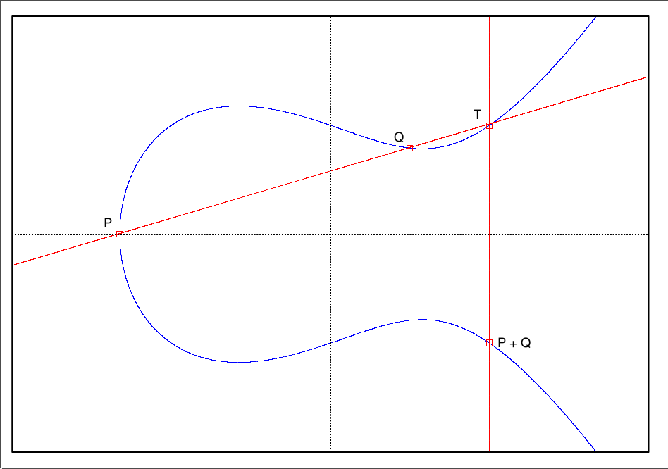
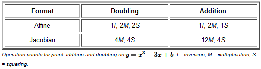

密码学一些基本的工具
信息论是由香农在1948为了信号处理提出来的，本章主要介绍其中两个重要概念：熵（entropy）和信息（information）。
熵是一种评估一个或多个变量不确定性的度量。
举个例子：一个原批的发言记录大概率是“原神启动”或者“原神怎么你了”，不确定性低，熵小；而一个随机的发言记录，不确定性高，熵大。
香农熵（Shannon's Entropy）的定义如下： $$ H = -\sum_{i} p_i \log_b p_i $$ 其中，$p_i$是第$i$个消息出现的概率，在计算机科学中，一般取$b=2$
假如现在 4 个原批，4个正常人，那么熵为： $$ H_{原批} = -\sum_{i=1}^4 1 \log_2 1 = 0\ H_{正常人} = -\sum_{i=1}^4 \frac{1}{4} \log_2 \frac{1}{4} = 2 $$ 这个结果也符合我们的直觉：原批的熵小，正常人的熵大。
1950年提出的信息定义如下： " Information is a measure of one's freedom of choice when one selects a message."
“当一个人选择一条消息时，信息是衡量一个人选择自由度的标准。”
举个例子，还是4个原批4个正常人，如果给定一个回答——“甘雨的“履虫”效果是施放山泽麟迹后30秒内的第一次霜华矢，无需蓄力即可施放。” 那我们基本可以判断这个回答来自原批，相反，如果是其它知识点，那么我们就难以判断了。 因此我们可以说原神的包含了更多的信息（低自由度），随机回答则包含更少的信息（高自由度）。
那么信息和熵的关系是啥？ 我们扩展熵的定义，给出条件熵（Conditional Entropy）的定义： $$ H(Y|X) = \sum_{x\in X} p(x) H(Y|X=x) $$ 熵是变量的不确定性，因此，条件熵的含义实际上是：给定“线索(clue)”（条件）$X$ 时 $Y$ 的不确定性。
当$X$只包含$Y$的一点信息时，给了$X$仍然很难确定$Y$，条件熵很大，即“$X$并没有显著降低$Y$的不确定性”；反之，如果$X$包含$Y$的基本信息，那么当给定$X$时$Y$的熵预计会很低。因此，条件熵可以被视为对X所拥有的Y信息的理性测量！
另一个重要测量标准被称为互信息（Mutual Information），它是两个变量之间相互依赖性的度量。定义它的一种方法是给定条件时的熵（不确定性）损失： $$ I(X;Y) = H(X) - H(X|Y) = H(Y) - H(Y|X) $$
信息论的概念广泛应用于密码学中。一个典型的例子是将密码过程视为一个通道（channel），明文和密文分别作为输入和输出。
因此测信道分析（side channel analysis）得益于信息论的使用。
$$ N = pq, \quad \phi(N) = (p-1)(q-1)\ e, d \quad s.t. \quad ed \equiv 1 \mod \phi(N)\ \text{公钥} = (N, e), \quad \text{私钥} = (N, d)\ C = m^e \mod N, \quad M = c^d \mod N $$ 对手可以窃听 $C$ 并且可以知道公钥 $(n,e)$，但是要计算 $M$，对手必须找到 $n$ 的因子。如果选择了合适的 $n$，这会是一个非常难解决的问题。
强 RSA 假设与 RSA 假设的不同之处在于，对手可以选择（奇数）公共指数 $e\geq 3$，对手的任务是在给定密文$C = M^e \mod N$的情况下计算明文 $M$，
这个假设用脚想都知道解起来肯定比一般的RSA简单，所以这个问题被称为“强RSA问题”。
这块内容英文教材基本看过了，这里简单总结一下。
令 $G$ 是一个Abelian群，$g$ 是 $G$ 的生成元，$h$ 是 $G$ 中的一个元素。DLP 问题是找到一个整数 $x$ 使得 $g^x = h$。
$x$ is called the discrete logarithm of $h$ with base $g$
给定 $G,g,g^a,g^b$，计算 $g^{ab}$。
如果我们解决了DLP，那么肯定可以解决CDH。$g^a\overset{DLP}{\rightarrow}a,(g^b)^a\rightarrow g^{ab}$ 所以，DLP起码和CDH一样难。DLP is at least as hard as CDH.
给定 $G,g,g^a,g^b,g^c$，判断 $g^{ab} = g^c$ 是否成立。
另外一种表示方法：给定 $G,g,g^a,g^b,T_x$，假设$T_0$是一个随机的群元素，$T_1 = g^{ab}$，$x$ 随机取自${0,1}$，find $x$。
如果我们可以解决DDH（注意只需要判断$x$的正确率大于 $\frac{1}{2}$ 就行），这样就意味着即使算不出 $g^{ab}$，也一定会泄露 $g^{ab}$ 的一些信息。 同样的道理，如果我们解决了CDH，那么肯定可以解决DDH。(都能算出来了还判断不了相不相等？) 所以，CDH起码和DDH一样难。CDH is at least as hard as DDH.
总结：DLP is the most hard, then CDH and then DDH.
仍然只是简单总结一下：
椭圆曲线是一个二元三次方程，但是我们一般采用 Weierstrass 形式： $$ y^2 = x^3 + ax + b $$ 其中 $a,b \in \mathbb{F}_p$，$4a^3 + 27b^2 \neq 0$。
椭圆曲线的加法用一张图足矣 
什么是投影点？
令 $c,d$ 为正整数，$K$ 是一个域（field，特征不为 2 或 3），$K^3\backslash {0,0,0}$上存在一个等价关系“$\sim$”： $$ (X_1,Y_1,Z_1) \sim (X_2,Y_2,Z_2) \ if\ \exists \lambda \in K^* \quad s.t. \quad X_1 = \lambda^c X_2, Y_1 = \lambda^d Y_2, Z_1 = \lambda Z_2 $$ 包含$(X,Y,Z)\in K^3\backslash {0,0,0}$的等价类为： $$ (X:Y:Z) = {(\lambda^c X, \lambda^d Y, \lambda Z):\lambda \in K^* } $$ 现在我们有了投影点 $(X:Y:Z)$ 和它的表示形式 $(X,Y,Z)$。
上面是通用格式，我们一般采用 Jacobian 坐标系，其中 $Z \neq 0$，在这种表示中，投影点 $(X:Y:Z)$ 对应于仿射点(affine point) $(\frac{X}{Z^2},\frac{Y}{Z^3})$。
投影点表示可以提高计算效率，因为它可以减少计算中除法的次数。
场反演（field inversion）是计算中最慢的操作之一。
计算开销对比如下： 
消除inversion算法，代价是增加了一些乘法和加法，但是这些操作在计算机上运行的代价要小得多。
p.s.：缺点是可能在实现中泄露一些额外信息？？
一个 pairing 是一个映射 $e:G_1 \times G_2 \rightarrow G_3$，其中 $G_1,G_2,G_3$ 是三个循环群，生成元分别是$g_1,g_2,g_3$，阶为 $q$，需要满足以下条件：
后两个被称为非对称pairing，第一个被称为对称pairing。
warings: 在Type 1 和 2 中，DDH 问题很容易被解决，只需要计算 $e(g^x,g^y)\overset{$}{=}e(g^z,g)$ 即可。
这不代表Type 3是安全的
applications:
它和椭圆曲线也联系密切，后期会讲